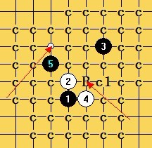
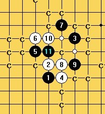
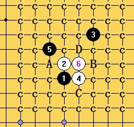
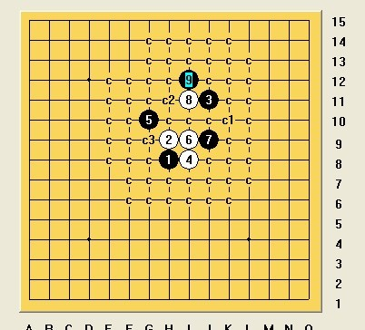
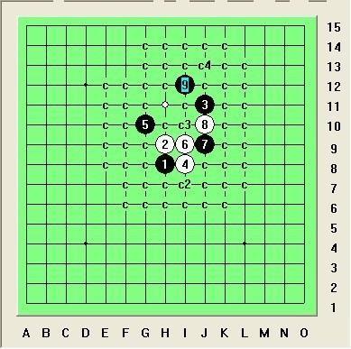

求教外溪刀（3威望）
#1 求教外溪刀（3威望） 作者：侯军学棋 发表时间：2011-12-25 14:38:37
［此帖子已被 失落刀 在 2011-12-25 19:21:35 编辑过］
#2 Re:求教外溪刀 作者：失落刀 发表时间：2011-12-25 16:24:10
其他6都解决了吗？#3 Re:求教外溪刀 作者：侯军学棋 发表时间：2011-12-25 17:30:01
其他6都完成了
［ 失落刀 于 2011-12-25 19:22:17 时花20金币送鲜花一朵］
#4 Re:求教外溪刀 作者：失落刀 发表时间：2011-12-25 19:19:49
好，一楼的问题，一个6一个威望。
［ 蹲街丶式寂寞 于 2011-12-28 21:49:37 时花20金币送鲜花一朵］
#5 Re:求教外溪刀（3威望） 作者：非黑既白 发表时间：2011-12-25 22:55:24
［ 蹲街丶式寂寞 于 2011-12-28 21:49:22 时花20金币送鲜花一朵］
#6 Re:求教外溪刀（3威望） 作者：蹲街丶式寂寞 发表时间：2011-12-26 9:47:04
第二题。就剩这个8了。也应该好解决。
这个有点麻烦。
［此帖子已被 蹲街丶式寂寞 在 2011-12-26 9:56:48 编辑过］
#7 Re:求教外溪刀（3威望） 作者：逆刃 发表时间：2011-12-26 18:25:30
#8 Re:求教外溪刀（3威望） 作者：逆刃 发表时间：2011-12-26 18:57:24
刚刚大概看了下，好像贴的不是最强，还有一些点比较强，没时间不想拆了。
#9 Re:求教外溪刀（3威望） 作者：蹲街丶式寂寞 发表时间：2011-12-26 19:06:31
我主要拆的是这个局面。。不过现在没时间了。回来再看。
#10 Re:求教外溪刀（3威望） 作者：侯军学棋 发表时间：2011-12-26 22:49:45
 怎么弄
怎么弄
#11 Re:求教外溪刀（3威望） 作者：蹲街丶式寂寞 发表时间：2011-12-27 1:25:17
不好弄。
其他的也难@！
干脆换个点。
［此帖子已被 蹲街丶式寂寞 在 2011-12-27 1:46:16 编辑过］
#12 Re:求教外溪刀（3威望） 作者：逆刃 发表时间：2011-12-27 10:02:28
拆棋不言难，哪有不难的，不难的几秒就看出来了，慢慢磨吧。［ 蹲街丶式寂寞 于 2011-12-28 21:48:55 时花20金币送鲜花一朵］
#13 Re:求教外溪刀（3威望） 作者：与郎共五 发表时间：2011-12-27 10:50:12
［ 蹲街丶式寂寞 于 2011-12-29 21:36:12 时花20金币送鲜花一朵］
#14 Re:求教外溪刀（3威望） 作者：侯军学棋 发表时间：2011-12-27 12:23:31
 做了一个6请验证 有没有BGU.rar
做了一个6请验证 有没有BGU.rar
［ 失落刀 于 2011-12-27 15:54:30 时奖励此帖[金币加 100 威望加1］
［ 蹲街丶式寂寞 于 2011-12-28 21:48:15 时花20金币送鲜花一朵］
#15 Re:求教外溪刀（3威望） 作者：侯军学棋 发表时间：2011-12-27 12:35:31
#16 Re:求教外溪刀（3威望） 作者：侯军学棋 发表时间：2011-12-28 20:34:56
这个6我认为这个7好，8和10都是唯一#17 Re:求教外溪刀（3威望） 作者：逆刃 发表时间：2011-12-28 23:04:27
如果是我的话会选这个7。
#18 Re:求教外溪刀（3威望） 作者：侯军学棋 发表时间：2011-12-29 21:00:25
#19 Re:求教外溪刀（3威望） 作者：蹲街丶式寂寞 发表时间：2011-12-29 21:43:51
上图非常强，要地毯确实很难。我应该会选择上图的F7开始疯狂的折磨白。
#20 Re:求教外溪刀（3威望） 作者：逆刃 发表时间：2011-12-29 22:56:25
你拆拆看有难点不？即使有，我觉得地毯的概率也要比你的那个大，这个棋型后边是常规做棋发展的棋型，后面可以发挥的空间很大，拆必胜地毯关键要思路正确，即使有个唯一杀不掉也是徒劳，很多情况下，出现的唯一很可能就是平衡的定式走法。比如瑞星前10手。有可能寒星看上去难度大很多，但就是能地毯。当然我不是说这个局面就一定能地毯，我只是建议可以试试看。
#21 Re:求教外溪刀（3威望） 作者：鬃毛 发表时间：2011-12-30 2:55:19
［ 蹲街丶式寂寞 于 2011-12-30 9:08:23 时花20金币送鲜花一朵］
［ 蹲街丶式寂寞 于 2011-12-30 9:13:50 时花20金币送鲜花一朵］
［ 蹲街丶式寂寞 于 2011-12-30 9:14:09 时花20金币送鲜花一朵］
［ 失落刀 于 2011-12-30 18:13:32 时奖励此帖[金币加 100 威望加1］
#22 Re:求教外溪刀（3威望） 作者：蹲街丶式寂寞 发表时间：2011-12-30 9:30:43
鬃毛 的19手关键点。实在是太妙了。完美解决了那个白8后黑难胜的局面。
帮楼主检查了下Q2的地毯。没问题，感叹楼主的地毯之精小。自己重新打了下。有一处略有修改，当然楼主的也绝无问题。只是地毯起来花的时间长点而已。各位超级牛人，我都大大得赞！
［ 失落刀 于 2011-12-30 18:13:53 时奖励此帖[金币加 100 威望加1］
#23 Re:求教外溪刀（3威望） 作者：侯军学棋 发表时间：2012-1-2 20:11:57
次强6分支.rar谢谢检查BUG［ 失落刀 于 2012-1-2 20:19:03 时奖励此帖[金币加 100 威望加1］
［ 逆刃 于 2012-1-3 18:46:33 时花20金币送鲜花一朵］
#24 Re:求教外溪刀（3威望） 作者：冥王哈迪斯 发表时间：2012-1-4 19:57:11
你第一个谱 根本没杀干净啊！后续？
［ 失落刀 于 2012-1-4 22:01:54 时花20金币送鲜花一朵］
#25 Re:求教外溪刀（3威望） 作者：冥王哈迪斯 发表时间：2012-1-4 20:51:04
看来我的13 麻烦了...［ 失落刀 于 2012-1-4 22:02:11 时花20金币送鲜花一朵］
#26 Re:求教外溪刀（3威望） 作者：逆刃 发表时间：2012-1-13 20:45:31
最后一个6我没有拆过，既然弄了这么久想必简单的手段都试过了，或者说眼看最强的线路的都杀不掉，那么如果要地毯的话就只有从外围控制上着手了，猥琐杀。我只是提点建议。大家可以试试，有问题再提出来交流。
［ 失落刀 于 2012-2-1 18:02:00 时奖励此帖[金币加 100 威望加1］
#27 Re:求教外溪刀（3威望） 作者：冥王哈迪斯 发表时间：2012-1-22 23:14:25
最近发现一个点不错。没有尝试，所以不知道结论，拿出来大家参考一下［ 失落刀 于 2012-1-31 22:58:37 时奖励此帖[金币加 100 威望加1］
#28 Re:求教外溪刀（3威望） 作者：侯军学棋 发表时间：2012-1-31 12:56:07
只有4个点了，D点没希望［ 失落刀 于 2012-1-31 22:59:00 时奖励此帖[金币加 100 威望加1］
#29 Re:求教外溪刀（3威望） 作者：失落刀 发表时间：2012-1-31 23:01:09
 告诉大家一个秘密：研究、交流妖刀的棋友，威望低的都将比较容易获得威望。嘘~
告诉大家一个秘密：研究、交流妖刀的棋友，威望低的都将比较容易获得威望。嘘~
#30 Re:求教外溪刀（3威望） 作者：自来水 发表时间：2012-1-31 23:12:28

［ 失落刀 于 2012-1-31 23:15:38 时花20金币送鲜花一朵］
#31 Re:求教外溪刀（3威望） 作者：逆刃 发表时间：2012-2-1 0:05:01
26楼和31楼表示强烈的抗议。#32 Re:求教外溪刀（3威望） 作者：茗弈宽容 发表时间：2012-2-1 11:15:54
楼上你不睡觉所？半夜发帖。
#33 Re:求教外溪刀（3威望） 作者：冥王哈迪斯 发表时间：2012-2-1 16:17:47
剩下三个点。。。有兴趣的帮忙杀一下#34 Re:求教外溪刀（3威望） 作者：日月丽天 发表时间：2012-2-2 17:29:45

应该可以地毯的，先发下图
［ 月光公主 于 2012-2-2 17:33:53 时花20金币送鲜花一朵］
［ 月光公主 于 2012-2-2 17:34:13 时花20金币送鲜花一朵］
［ 月光公主 于 2012-2-2 17:34:32 时花20金币送鲜花一朵］
［ 逆刃 于 2012-2-2 18:59:41 时花20金币送鲜花一朵］
［ 失落刀 于 2012-2-2 19:54:33 时奖励此帖[金币加 100 威望加1］
#35 Re:求教外溪刀（3威望） 作者：冥王哈迪斯 发表时间：2012-2-2 18:19:38
感谢日月丽天，我也已经搞定了 9在8下面 一样必胜，
［ 失落刀 于 2012-2-2 19:54:14 时奖励此帖[金币加 100 威望加1］
#36 Re:求教外溪刀（3威望） 作者：冥王哈迪斯 发表时间：2012-2-2 18:21:04
还有两个点 大家帮帮杀一下#37 Re:求教外溪刀（3威望） 作者：冥王哈迪斯 发表时间：2012-2-2 18:21:52
#38 Re:求教外溪刀（3威望） 作者：郎情 发表时间：2012-2-4 15:54:50
［此帖子已被 郎情 在 2012-2-4 16:41:11 编辑过］
［此帖子已被 郎情 在 2012-2-4 16:45:51 编辑过］
［ 失落刀 于 2012-2-5 14:59:16 时奖励此帖[金币加 100 威望加1］
#39 Re:求教外溪刀（3威望） 作者：月光公主 发表时间：2012-2-5 10:55:58

［ 日月丽天 于 2012-2-5 10:58:55 时花20金币送鲜花一朵］
［此帖子已被 失落刀 在 2012-2-5 11:01:56 编辑过］
［ 失落刀 于 2012-2-5 14:59:47 时奖励此帖[金币加 100 威望加1］
#40 Re:求教外溪刀（3威望） 作者：月光公主 发表时间：2012-2-5 11:03:47
另这个10已解决，因我网络关系上传不了图片了，改天网络好了再与大家分享
［ 失落刀 于 2012-2-5 15:00:09 时奖励此帖[金币加 100 威望加1］
#41 Re:求教外溪刀（3威望） 作者：郎情 发表时间：2012-2-7 16:57:59

#42 Re:求教外溪刀（3威望） 作者：郎情 发表时间：2012-2-7 17:06:07
#43 Re:求教外溪刀（3威望） 作者：月光公主 发表时间：2012-2-13 17:45:14
楼上的大师您发的图太小了我这里怎么看不到
#44 Re:求教外溪刀（3威望） 作者：郎情 发表时间：2012-9-23 0:25:29